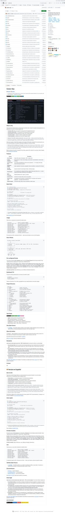
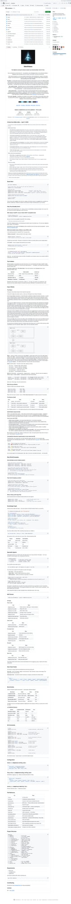
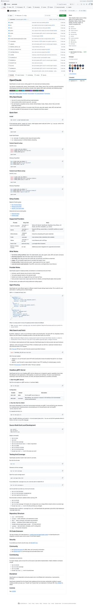
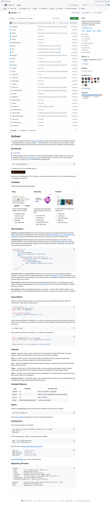
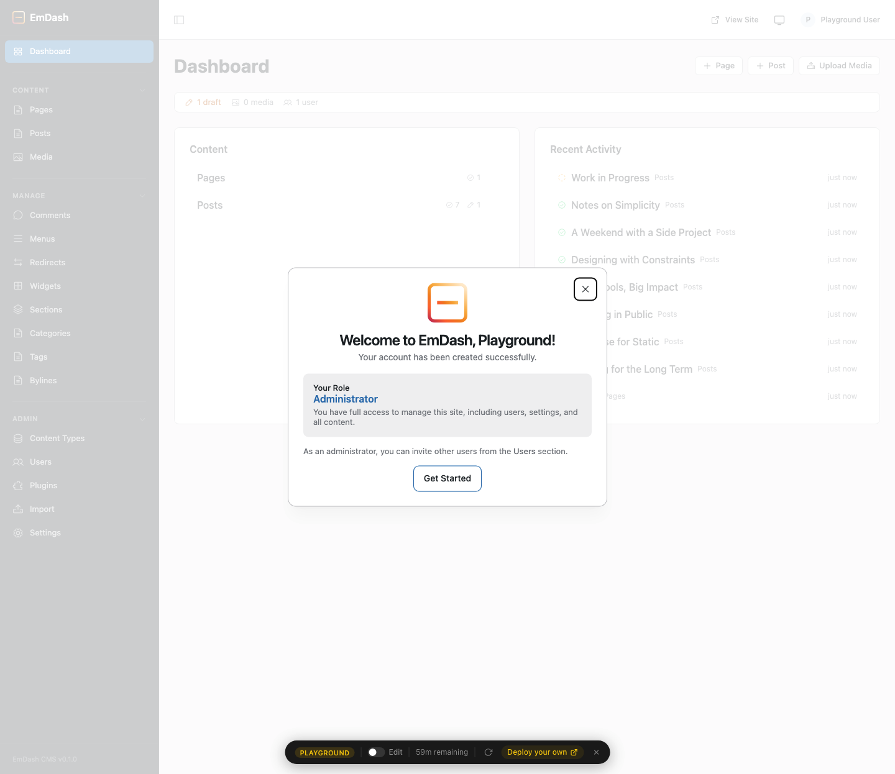
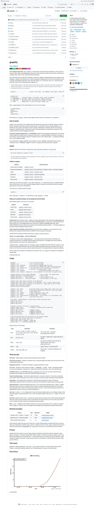

5个GitHub新星项目速报！Career-Ops求职全自动、MemPalace AI记忆之宫、OpenClaude开源编程CLI
Neo整理
每天凌晨，我会自动扫描GitHub Trending，筛选出60天内创建、增长最快的高潜力项目，计算"新星指数"（周增长/√总Star），为你发现下一个可能爆发的开源项目。
今天发现了5个新星项目，涵盖AI求职、记忆系统、编程CLI、下一代CMS和代码可视化等热门领域。让我们一起来看看！
Career-Ops：Claude Code驱动的AI求职全自动流水线
Career-Ops 是一个基于 Claude Code 构建的 AI 求职流水线系统，它将整个求职过程——从发现职位、评估匹配度、生成定制简历到跟踪进度——全部自动化。这不是一个"海投工具"，而是一个智能过滤器：帮你从数百个职位中精准筛选出真正值得投递的那几个。

▲ Career-Ops GitHub 仓库截图
项目作者 santifer 亲身使用这套系统评估了 740+ 个职位，生成了 100+ 份定制简历，最终成功拿下了 Head of Applied AI 的 offer。这不是一个玩具项目，而是经过真实求职战场检验的完整系统。
Career-Ops 的核心理念是"Agent式求职"：Claude Code 通过 Playwright 自动导航招聘页面（支持 Greenhouse、Ashby、Lever 等 45+ 家公司），然后用 AI 推理（而非关键词匹配）评估你的简历与职位描述的匹配度，最后为每个职位量身定制 ATS 优化的 PDF 简历。
💡 核心价值：将求职从"人工海投"升级为"AI精准制导"。系统采用 A-F 评分（10个加权维度），强烈建议不投递 4.0 分以下的职位——你的时间和招聘方的时间都很宝贵。
核心功能：
- 6模块深度评估 — 角色摘要、简历匹配、级别策略、薪资调研、个性化定制、面试准备（STAR+R）
- 面试故事库 — 跨评估积累 STAR+Reflection 故事，5-10 个核心故事应对所有行为面试问题
- 谈判脚本 — 薪资谈判框架、地理折扣反驳、竞争 Offer 杠杆策略
- ATS PDF 生成 — 关键词注入的简历，Space Grotesk + DM Sans 设计
- 批量并行处理 — 用
claude -p子代理并行评估 10+ 个职位 - 终端仪表盘 TUI — 浏览、筛选、排序你的求职管线
git clone https://github.com/santifer/career-ops.git
cd career-ops && npm install
npx playwright install chromium
npm run doctor # 验证所有前置条件值得注意的是，Career-Ops 采用"Human-in-the-Loop"设计——AI 评估和推荐，但最终决策和投递都由你来完成。系统永远不会自动提交申请，你始终拥有最终控制权。作者特别强调：前几次评估可能不够精准，因为系统还不了解你。你需要喂给它足够的上下文——简历、职业故事、优势劣势、偏好——它才会越来越懂你，就像培训一个新招聘经理一样。
MemPalace：史上最高分的AI记忆系统，完全免费
MemPalace 借鉴古希腊演说家的"记忆宫殿"技术，为 AI 对话构建了一个全量存储、结构化可导航的记忆系统。每一次对话——每个决策、每次调试、每场架构讨论——都不再随着会话结束而消失。

▲ MemPalace GitHub 仓库截图
其他记忆系统的做法是让 AI 决定什么值得记住——提取出"用户偏好 Postgres"然后丢掉你解释为什么选择 Postgres 的那段对话。MemPalace 的思路完全不同：存储一切，然后让它可被找到。
系统将对话组织成"翼"（按人和项目分类）、"厅"（按记忆类型分类）和"室"（具体的想法和概念）。不需要 AI 决定什么重要，你保留每一个字，结构化组织给你一张可导航的地图而不是一个扁平的搜索索引。
💡 核心价值：LongMemEval 基准测试 96.6% R@5——史上最高分，零 API 调用，完全本地运行。在 M2 Ultra 上不到 5 分钟独立复现。
核心功能：
- 原始逐字存储 — 不做摘要、不做提取，用 ChromaDB 存储原始对话
- 宫殿架构 — Wings（翼）、Halls（厅）、Rooms（室）、Closets（柜）、Drawers（抽屉）五层结构
- AAAK 压缩（实验性） — 有损缩写方言，任何 LLM 可读，无需解码器
- MCP Server — 内置 MCP 服务器，Claude Desktop / VS Code 直接集成
- 完全本地 — 不使用任何外部 API 或服务，数据不离开你的机器
git clone https://github.com/milla-jovovich/mempalace.git
cd mempalace && pip install -e ".[all]"
mempalace init --palace ./my-palace
# MCP集成: mempalace mcp项目发布后社区迅速发现了一些问题——作者坦诚回应：AAAK 模式目前得分 84.2%（低于原始模式的 96.6%），"30x无损压缩"说法被修正为"有损缩写"。这种开放透明的态度反而赢得了更多信任。项目仍在快速迭代中，已经修复了 ChromaDB 兼容性、shell 注入和 macOS ARM64 段错误等问题。
OpenClaude：一个CLI统一所有AI编程模型
OpenClaude 是一个开源的编程代理 CLI，让你用一个终端界面统一使用 OpenAI、Gemini、GitHub Models、Codex、Ollama、DeepSeek 等几乎所有主流 AI 模型。它保留了 Claude Code 的工作流体验——提示、工具、代理、MCP、斜杠命令、流式输出——但后端模型随你切换。

▲ OpenClaude GitHub 仓库截图
对于那些喜欢 Claude Code 的交互体验但又不想被锁定在单一模型上的开发者来说，OpenClaude 提供了一个完美的中间地带。你可以在同一个 CLI 中切换不同的提供商配置文件（用 /provider 命令管理），享受一致的开发体验。
💡 核心价值：终结"AI编程工具碎片化"。一个 CLI，所有模型。保存的提供商配置让切换模型像切换 Git 分支一样简单。
核心功能：
- 多提供商支持 — OpenAI、Gemini、GitHub Models、Codex、Ollama、Atomic Chat 等
- 提供商配置文件 — 用
/provider保存和切换不同的模型配置 - 完整工具链 — bash、文件工具、grep、glob、agents、tasks、MCP、web 工具
- VS Code 扩展 — 内置 VS Code 集成，支持启动和主题
- Headless gRPC Server — 支持无头模式运行，方便集成到 CI/CD 管线
- Agent Routing — 自动选择最佳模型路由复杂查询
npm install -g @gitlawb/openclaude
openclaude
# 输入 /provider 开始配置你的模型提供商OpenClaude 特别适合企业团队：不同的项目可以使用不同的模型（预算敏感的用 GPT-4o-mini，需要极致推理的用 o1），但开发者只需要学习一套工具链。它还支持本地模型（Ollama），对于安全敏感的场景，代码不需要离开你的网络。
EmDash：TypeScript全栈CMS，WordPress的现代继承者
EmDash 基于 Astro 和 Cloudflare 构建，是一个全栈 TypeScript CMS。它吸取了 WordPress 统治 CMS 领域 20 年的核心优势——可扩展性、管理后台 UX、插件生态——然后在无服务器（Serverless）和类型安全的基础上彻底重建。

▲ EmDash GitHub 仓库截图
WordPress 最大的安全隐患来自插件：任何插件都能访问整个 PHP 运行时。EmDash 用 Cloudflare Worker Isolates 实现了沙箱化插件——每个插件都在隔离的 Worker 中运行，从根本上解决了 WordPress 插件架构的安全问题。

▲ EmDash Playground 在线演示——完整的管理后台体验
💡 核心价值：WordPress 的精神继承者，但用现代技术栈重写。没有 PHP，没有独立托管层——部署你的 Astro 站点即可。
核心功能：
- 三套起步模板 — Blog（博客）、Marketing（营销落地页）、Portfolio（作品集）
- 沙箱化插件 — Cloudflare Worker Isolates 隔离执行，安全无忧
- 内容 API — Astro Content Layer + REST/GraphQL API，灵活对接
- 多平台部署 — Cloudflare（D1 + R2 + Workers）或任何支持 SQLite 的 Node.js 服务器
- WordPress 导入 — 一键导入 WordPress 的文章、页面、媒体和分类
- AI Agent 集成 — 内置 AI Agent 支持插件和主题开发
npm create emdash@latest
# 或一键部署到 Cloudflare：
# 访问 deploy.workers.cloudflare.comEmDash 的 Playground 功能让你可以零成本体验完整的管理后台——不需要注册，不需要部署，直接在浏览器中试用。对于正在考虑从 WordPress 迁移的团队来说，EmDash 提供了一条清晰的升级路径：类型安全、Serverless、沙箱化插件、现代开发体验。
Graphify：一条命令将代码库变成交互式知识图谱
Graphify 是一个 AI 编程助手技能——在 Claude Code、Codex、OpenCode、OpenClaw 或 Factory Droid 中输入 /graphify，它就能读取你的文件，构建知识图谱，帮你发现代码库中隐藏的结构。

▲ Graphify GitHub 仓库截图
Graphify 的独特之处在于全模态支持：不仅能分析代码，还能处理 PDF、Markdown、截图、白板照片、甚至其他语言的图片。它用 Claude Vision 从所有输入中提取概念和关系，汇聚成一张统一的知识图谱。支持 19 种语言的 Tree-sitter AST 解析（Python、JS、TS、Go、Rust、Java、C、C++ 等）。
💡 核心价值：Andrej Karpathy 风格的 /raw 文件夹——论文、推文、截图、笔记——graphify 让你能用 71.5 倍更少的 token 查询这些原始资料，且结果跨会话持久化。
核心功能：
- 两阶段分析 — 第一阶段：确定性 AST 提取（无需 LLM）；第二阶段：Claude 子代理并行分析文档和图片
- 交互式 HTML 图谱 — 点击节点、搜索、按社区过滤
- Leiden 社区检测 — 基于图拓扑的聚类，不需要嵌入向量
- 诚实标注 — 每条关系标记为 EXTRACTED（直接发现）、INFERRED（推理得出，带置信度）或 AMBIGUOUS（需要审查）
- SHA256 缓存 — 重新运行只处理变更的文件
- 跨平台支持 — Claude Code、Codex、OpenCode、OpenClaw、Factory Droid
pip install graphifyy && graphify install
# 在 Claude Code / Codex / OpenClaw 中：
/graphify .
# Codex 用户：$graphify .Graphify 的输出包括四个文件：交互式 HTML 图谱（点击节点探索关系）、纯文本报告（关键节点、意外连接、建议问题）、JSON 格式的持久化图谱（几周后仍可查询，无需重读文件）、以及 SHA256 缓存目录。特别适合代码审查、新员工 onboarding 和架构决策前的技术调研。